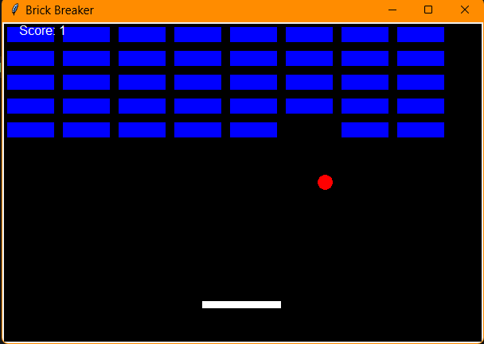
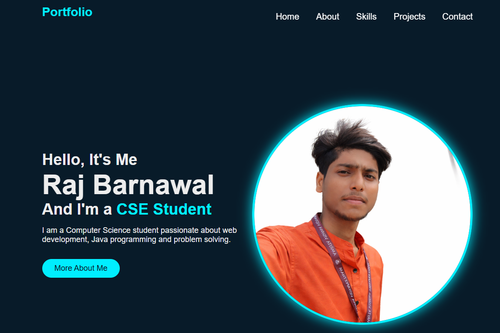

Projects

Snake Game
The Snake Game is developed using Python and Tkinter, featuring a graphical interface and interactive gameplay. The player controls the snake to collect food while avoiding collisions with walls and itself. This project helped me understand game logic, event handling, and GUI-based programming concepts.

Brick-breaker Game
A GUI-based Brick Breaker Game built using Python and Tkinter, featuring paddle control, collision detection, and a scoring system. This project enhanced my understanding of game logic and GUI development.

Portfolio Website
This portfolio website is developed using HTML and CSS to showcase my skills, projects, and academic background in a structured manner. It includes sections like Home, About, Skills, and Projects, providing a clear overview of my profile. The website features a clean and responsive design with smooth navigation for better user experience. This project helped me improve my understanding of web development and UI design principles.